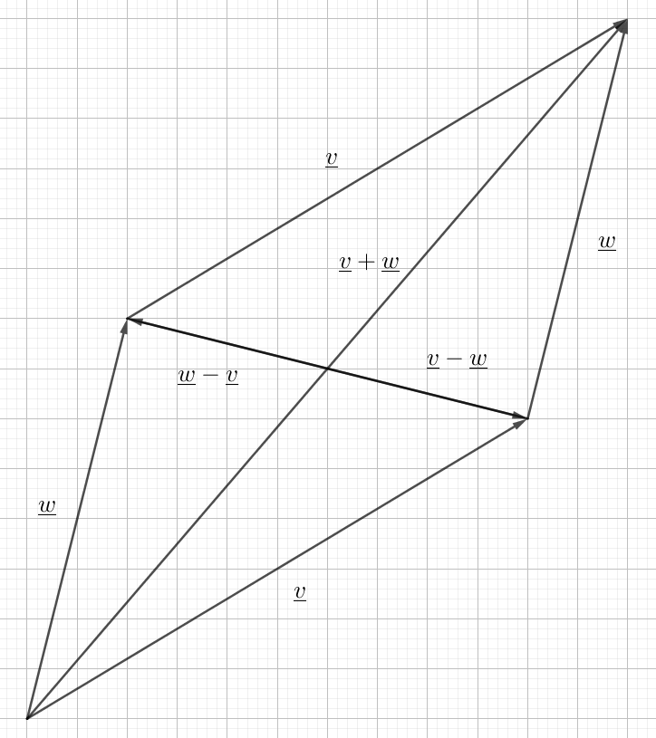

A vector \(\underline{v}\) is an object that has a magnitude, denoted by \(|\underline{v}|\) and a direction which can be represented in several ways. You can denote it by its angle with the x-axis, \(\theta\), or you could denote it by specifying it's coordinates, in the current setting we will restrict ourselves to two dimensons denoted by x and y, as such $$\underline{v}={v_1\choose v_2}$$ which means that the vector spans \(v_1\) units horizontally and \(v_2\) units vertically. The magnitude of the vector can be determined by these coordinates by applying the Pythagorean theorem as such $$|\underline{v}|=\sqrt{v_1^2+v_2^2}$$ You can add two vectors by extending one by the other, and then the sum of the two vectors is the vector that goes from the start of the first vector to the end of the second. This can also be calculated algebraically as such $$\underline{v}+\underline{w}={v_1+w_1\choose v_2+w_2}$$ You can also subtract vectors and this is just defined as such \(\underline{v}-\underline{w}=\underline{v}+(-\underline{w})\) where \(-\underline{w}\) is the vector that has the same magnitude as \(\underline{w}\) but the opposite direction. These two processes will produce the diagonals of the parallelogram spanned by the two vectors, the sum will be the diagonal that goes from the start to the far end, while the two differences correspond to the the other diagonal as seen in the following image.

If you want to scale a vector by a factor k, this just changes the magnitude and is represented algebraically as $$k\underline{v}={kv_1\choose kv_2}$$ If \(k < 0\) this represents flipping the vector and specifically \(k=-1\) is the opposite vector.
We have two useful methods to "multiply" two 2D vectors with each other. One is the so-called scalar product $$\underline{v}\bullet\underline{w}=v_1w_1+v_2w_2$$ and the other is the determinant $$\det(\underline{v},\underline{w})=\hat{\underline{v}}\bullet\underline{w}=\begin{vmatrix}v_1 & w_1\\v_2 & w_2\end{vmatrix}=v_1w_2-v_2w_1$$ where I will call $$\hat{\underline{v}}={-v_2\choose v_1}$$ the canonical orthogonal vector, or CO-vector, to \(\underline{v}\).
Vectors satisfy most of the rules of the rules that apply to scalars, such as commutativity, associativity and distributativity. Both with respect to the sum, scalar-multiple and scalar-product. The determinant however, is anti-commutative.
It is not exactly clear how one would be able to divide vectors, and this is not a widely recognized operation, but you can define what I will call the scalar-division as $$\frac{\underline{v}}{\underline{w}}=\frac{\underline{v}\bullet\underline{w}}{|\underline{w}|^2}$$ This operation is very useful in conjunction with the concept of vector projections. We can write $$\underline{v}=\frac{\underline{v}}{\underline{w}}\underline{w}+\frac{\underline{v}}{\hat{\underline{w}}}\hat{\underline{w}}=\underline{v}_{\underline{w}}+\underline{v}_{\hat{\underline{w}}}$$ where we write \(\underline{v}\) as the sum of two vectors, one of which is parallel with \(\underline{w}\) and one that's orthogonal to it. These two vectors are then called the projectons of \(\underline{v}\) onto \(\underline{w}\) and its CO-vector and it's denoted by the notation on the rightmost side.
Before we can state our main result, we need to define the unit circle and associated objects. The unit circle is a circle with radius 1 about the origin. If we consider a vector \(\underline{v}\) and extend the vector so that it intersects the unit circle, we define the cosine of its angle \(\theta\) as the x-coordinate of the intersection point, similarly we define sine as the y-coordinate. Referring to the following image, the length of the green line represents the cosine of the angle and the length of the red line represents the sine.

At this point we are ready to state and prove what I call the fundamental theorem of vector geometry.
The Fundamental Theorem of Vector Geometry. For two vectors \(\underline{v}\) and \(\underline{w}\) we have:
\begin{align} \text{1. }&&\underline{v}\bullet\underline{w}&=|\underline{v}||\underline{w}|\cos(\theta)\\ \text{2. }&&\text{2. }\det(\underline{v},\underline{w})&=|\underline{v}||\underline{w}|\sin(\theta)=\pm A\\ \text{3. }&&\underline{v}_{\underline{w}}&=\frac{\underline{v}\bullet\underline{w}}{|\underline{w}|^2}\underline{w}=\frac{|\underline{v}|}{|\underline{w}|}\cos(\theta)\underline{w}\\ \text{4. }&&\underline{v}_{\hat{\underline{w}}}&=\frac{\det(\underline{v},\underline{w})}{|\underline{w}|^2}\hat{\underline{w}}=\frac{|\underline{v}|}{|\underline{w}|}\sin(\theta)\hat{\underline{w}} \end{align} Where \(\theta\) is the angle between the vectors and \(A\) is the area of the parallelogram spanned by the two vectors.
Proof. First we take our two vectors and scale them down to unit vectors so they fit into the unit circle, such that $$\underline{v}^*=\frac{\underline{v}}{|\underline{v}|}\text{ and }\underline{w}^*=\frac{\underline{w}}{|\underline{w}|}$$

Then if we tilt our head to the left, we can immediately observe from the image that $$\underline{w}^*=\cos(\theta)\underline{v}^*+\sin(\theta)\hat{\underline{v}}^*$$ this will be key to proving the statements in the theorem.
1. First we consider the scalar product: \begin{align} \underline{v}\bullet\underline{w}&=|\underline{v}|\underline{v}^*\bullet|\underline{w}|\underline{w}^*\\ &=|\underline{v}||\underline{w}|\underline{v}^*\bullet(\cos(\theta)\underline{v}^*+\cancel{\sin(\theta)\hat{\underline{v}}^*})\\ &=|\underline{v}||\underline{w}|\cos(\theta)\cancel{|\underline{v}^*|^2} \end{align} since the scalar product between orthogonal vectors is 0 and the * vectors are unit vectors.
2. Now we can find the determinant by taking the scalar product with the CO-vector: \begin{align} \det(\underline{v},\underline{w})&=\hat{\underline{v}}\bullet\underline{w}=|\underline{v}|\hat{\underline{v}}^*\bullet|\underline{w}|\underline{w}^*\\ &=|\underline{v}||\underline{w}|\hat{\underline{v}}^*\bullet(\cancel{\cos(\theta)\underline{v}^*}+\sin(\theta)\hat{\underline{v}}^*)\\ &=|\underline{v}||\underline{w}|\sin(\theta)\cancel{|\hat{\underline{v}}^*|^2} \end{align} for the same reasons. To see that this is the same as the area of the parallelogram, we can start by imagining the parallelogram with sides \(\underline{w}^*\) and \(\underline{v}\). This obviously has area \(A^*=h\cdot b=|\sin(\theta)||\underline{v}|\), now we can scale up to the full parallelogram by multiplying by \(|\underline{w}|\) to yield $$A=A^*\cdot|\underline{w}|=|\sin(\theta)||\underline{v}||\underline{w}|=|\det(\underline{v},\underline{w})|$$ 3 - 4. Now we take the key formula and multiply both sides by \(|\underline{w}|\) and expand the right hand side by \(|\underline{v}|^2\) to yield \begin{align} &&|\underline{w}|\underline{w}^*&=\frac{|\underline{v}||\underline{w}|\cos(\theta)}{|\underline{w}|^2}|\underline{v}|\underline{v}^* +\frac{|\underline{v}||\underline{w}|\sin(\theta)}{|\underline{w}|^2}|\underline{v}|\hat{\underline{v}}^*\\ \iff&&\underline{w} &=\frac{\underline{v}\bullet\underline{w}}{|\underline{w}|^2}\underline{v}+\frac{\det(\underline{v},\underline{w})}{|\underline{w}|^2}\hat{\underline{v}} \end{align} QED.